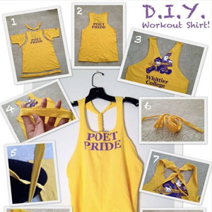
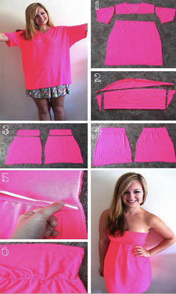

T-Shirts
|  | Turning a t-shirt into a racerback tanktop: MATERIALS: Read more at http://www.blogilates.com/printables-2/diy-racerback-workout-shirt-tutorial#ajyEF4GXvXhlhFAj.99 |
|  | Turning a t-shirt into a tube top: 1. You will need a very large tshirt. Cut off the sleeves, and then cut a straight line right below the neckline. The sleeves will become the top of the dress, and the large chunk will become the body of the dress. 2. Take the two sleeves you cut off, and cut the side seam of the sleeve open on each of them, and lay them flat. This will give you a nice long strip of fabric. (This will be the top of the dress, so test the rectangle pieces against your bust for coverage. As in-measure from your bra band to however high you want to cover your bust.) Cut out 2 identical rectangle pieces. Don't cut off the finished sleeve hem- later you can use this as the top hem on the dress. 3. Match up the top (previous sleeve) portions with the matching body (large chunk) portions. 4. Sew (right sides together) the top pieces to each body piece. Then sew up the side seams entirely. 5. Sew elastic for the waist/under bust. Sew it it straight onto the dress, stretching the elastic as you sew. (If you hate working with elastic, you could also belt the dress here while wearing it instead.) 6. Trim access and turn dress right side out. My shirt was stretchy enough not to need top hem elastic, but if you need it, just feed it through the top hem. |